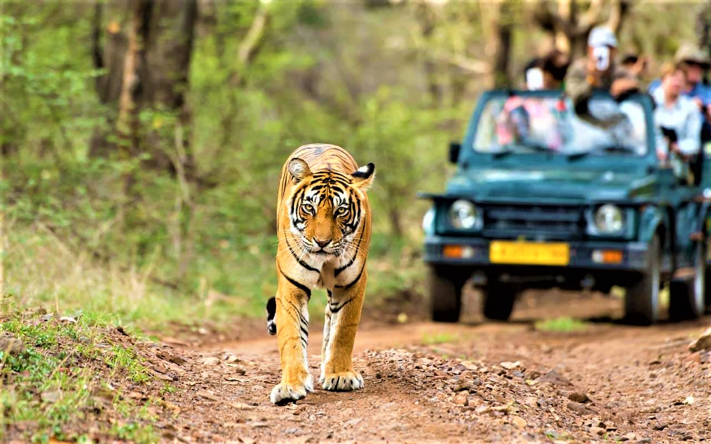
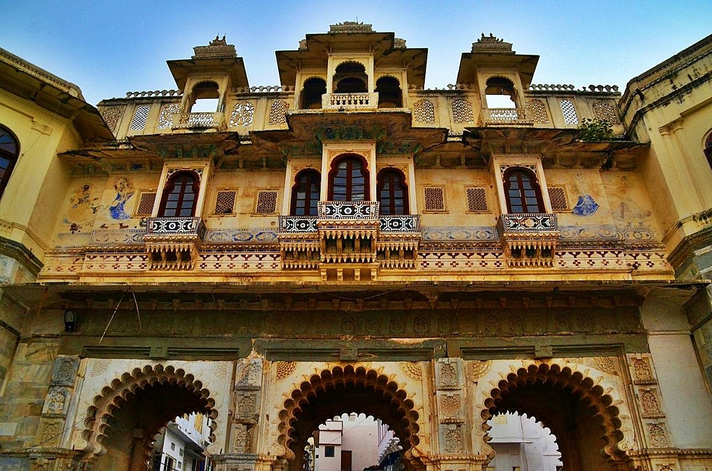
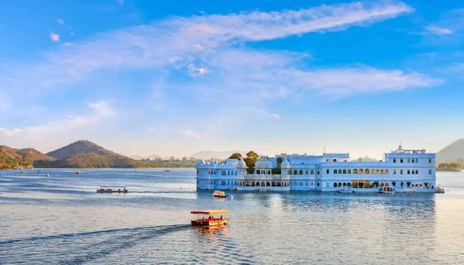
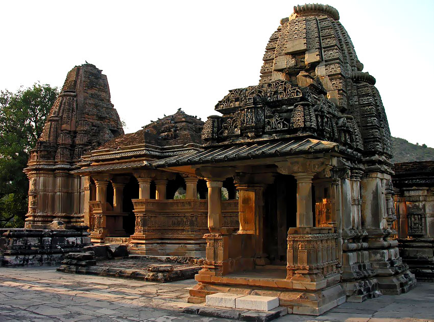
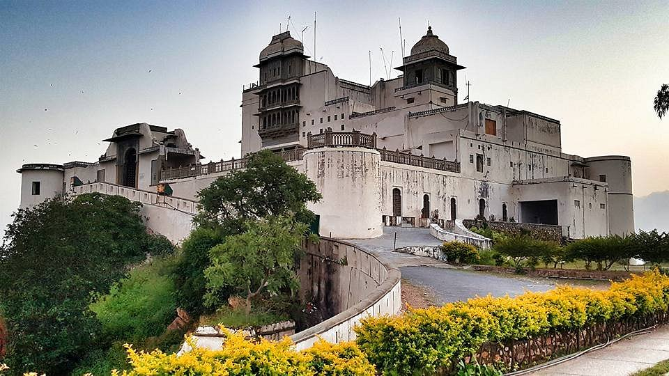
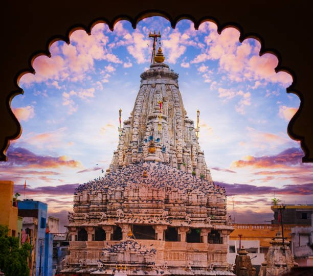
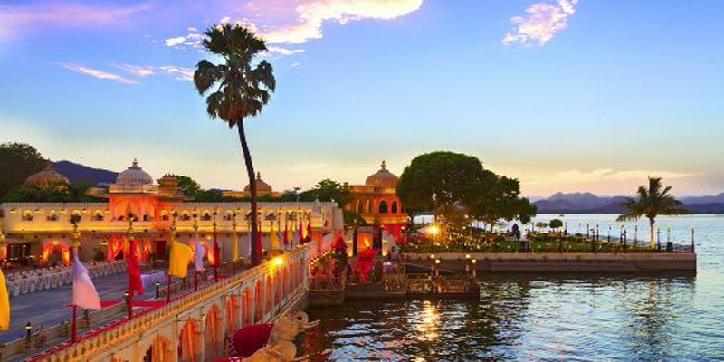
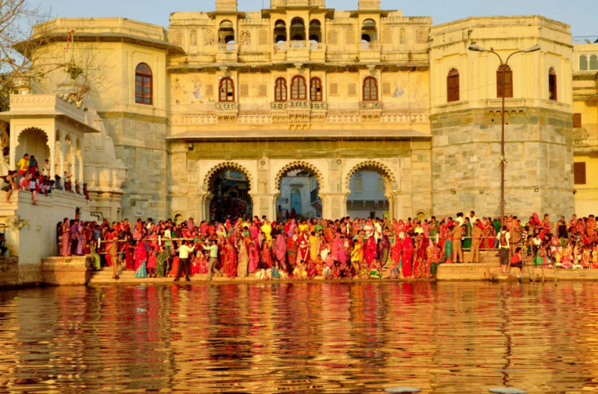
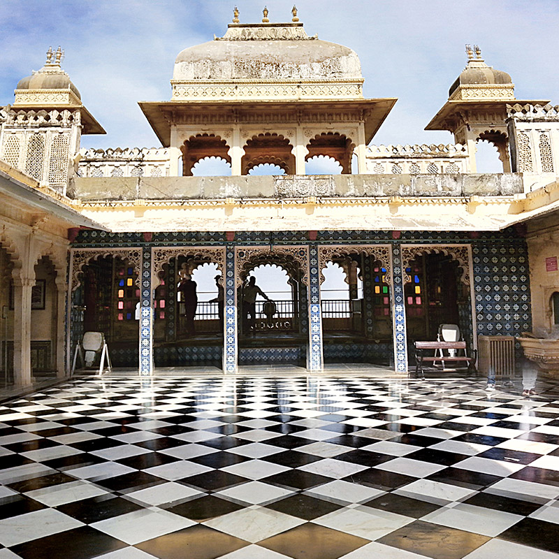

~ Places to Visit in Udaipur ~
Popular things to do

Nature & Wildlife Tours
Top Attractions in Udaipur

Bagore Ki Haveli Museum
Bagore ki Haveli was built by Amar Chand Badwa,
who was the gallant and anointed Prime Minister
of the Mewar kingdom during the rule of Maharanas
Pratap Singh II, Raj Singh II, Ari Singh, and
Hamir Singh for a long term between 1751 to 1778.

City Palace
The City Palace in Udaipur was built in a flamboyant
style and is considered the largest of its type in the
state of Rajasthan. It was built atop a hill, in a
fusion of the Rajasthani Rajput architecture providing
a panoramic view of the city and its surroundings.

Lake Pichola
It is one of the several contiguous lakes, and
developed over the last few centuries in and
around the famous Udaipur city. The lakes around
Udaipur were primarily created by building dams
to meet the drinking water and irrigation needs
of the city and its neighbourhood.

Shri Ekling Ji Temple
Eklingji Temple was built in the 8th century. It
is a prime spot for musing about the Lord Shri Ekling
Ji. The temple is located in the Kailashpuri district
of Udaipur. This Hindu temple is built by the Maharanas
of Mewar as these warriors were devoted to God Shri
Ekling Ji, for their success.

Sajjangarh Monsoon Palace
The palace offers a panoramic view of the city's lakes,
palaces and surrounding countryside. It was built
chiefly to watch the monsoon clouds; hence, appropriately,
it is popularly known as Monsoon Palace. It is said that
the Maharana built it at the top of the hill to get a
view of his ancestral home, Chittorgarh.
Animal Aid Unlimited
Every day we save animals with fractures, wounds, mange,
viral diseases, cancer, and much more. We vaccinate against
rabies and other illnesses, conduct spay and neuter and educate
the community about helping animals. Volunteers are a
life-sustaining force that enables us to give the best care
to the most animals.

Jagdish Temple
An example of the Indo-Aryan style of architecture, Jagdish
Temple was built in 1651 and continues to be one of the most
famous temples in and around Udaipur. Dedicated to Lord Vishnu,
the structure is an architectural marvel with carved pillars,
graceful ceilings and painted walls.

Jagmandir
It is named as "Jagat Mandir" in honour of the last named
Maharana Jagat Singh. The royal family used the palace as a
summer resort and pleasure palace for holding parties. The
palace served as a refuge to asylum seekers for one occasion.

Sahelion Ki Bari
Saheliyon-ki-Bari (Courtyard or Garden of the Maidens) is a
major garden and a popular tourist space in Udaipur in the Indian
state of Rajasthan. It lies in the northern part of the city and
has fountains and kiosks, a lotus pool and marble elephants. It
was built by Rana Sangram Singh.

Fateh Sagar Lake
The Fateh Sagar Lake Udaipur is the pride of Rajasthan. Known
for its beautiful views, this lake is an artificial lake.
Constructed under the right of Maharana in 1960, the lake
sprawls over 2.4 km. The blue waters are famous for its boating
with gigantic mountains on 3 sides.

Ambrai Ghat
Ambrai Ghat is a popular for its lake-side location
surrounded by many popular hotels including the Ambrai
restaurant. It is also popular for the picturesque
view of City Palace, Udaipur, and surrounding lakes.

City Palace Museum
City palace museum is housed within the city palace complex
situated on the east bank of pichola lake in Udaipur. The
museum has a collection of sculptures, old photographs,
paintings, old textiles, and other objects which were used
by the royal family.